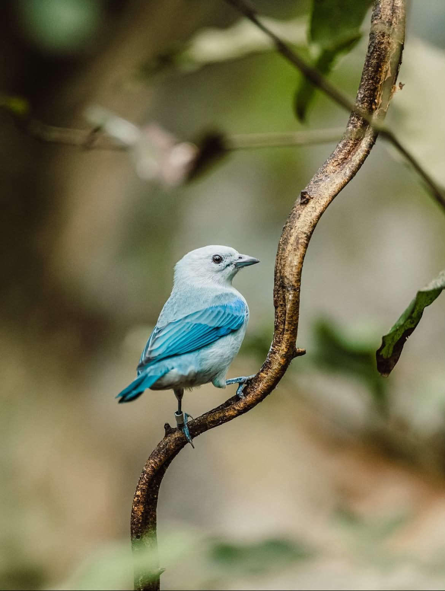

📏
Tamaño
Mide aproximadamente entre 16 y 18 cm de longitud y pesa entre 30 y 40 gramos.
EXPOSICIÓN CIENTÍFICA
Conoce una de las aves más comunes y adaptables de las regiones tropicales de América.
Conocer más
28 DE AGOSTO
CONOCIENDO AL AZULEJO
El Azulejo, también conocido como Tangara Azulgris o Tangara Azuleja, es un ave de la familia Thraupidae. Se caracteriza por su plumaje azul grisáceo y por su capacidad de adaptarse a diferentes ambientes.
CLASIFICACIÓN
DESCRIPCIÓN
Mide aproximadamente entre 16 y 18 cm de longitud y pesa entre 30 y 40 gramos.
Presenta un plumaje azul grisáceo claro en la cabeza, pecho y partes inferiores. Sus alas y cola presentan tonos azules más intensos.
Tiene ojos oscuros, patas gris azuladas y un pico corto y grueso.
Es un ave activa y relativamente confiada. Generalmente se encuentra en parejas o en pequeños grupos.
DÓNDE VIVE
El Azulejo se encuentra desde el sureste de México, atravesando Centroamérica, hasta el norte de Sudamérica.
Prefiere ambientes semiabiertos como bordes de bosques, bosques secundarios, plantaciones, jardines, parques urbanos, orillas de ríos y áreas cultivadas.
Es una especie residente y se adapta rápidamente a zonas modificadas por el ser humano.
ALIMENTACIÓN
Es una especie omnívora. Se alimenta principalmente de frutas y bayas, pero también consume insectos, arañas, néctar, flores y semillas.
VIDA Y CONDUCTA
Puede vivir en parejas o pequeños grupos.
Busca alimento principalmente en árboles.
Construye sus nidos en árboles o arbustos y pone entre 1 y 3 huevos.
Su canto consiste en sonidos agudos y chirriantes.
PROTECCIÓN
El Azulejo está clasificado como una especie de Preocupación Menor. Su población global estimada supera los 50 millones de individuos maduros.
Entre las amenazas locales se encuentran la captura ilegal para el comercio de mascotas y la pérdida de hábitat causada por la deforestación intensiva.
INFORMACIÓN DIGITAL
Escanea el código QR para acceder a la información científica del Azulejo desde cualquier teléfono.
📱 Escanéame